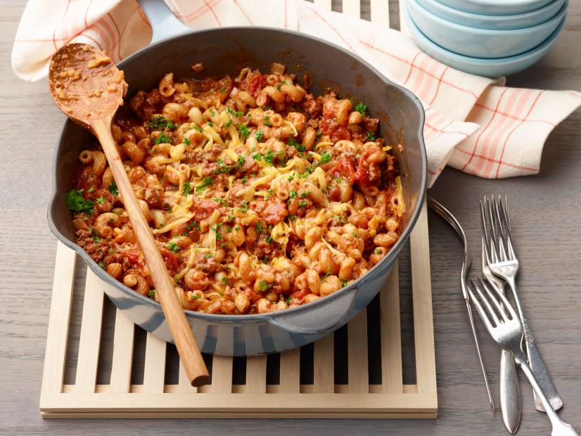

Home
Goulash

Description
Not to be confused with the Hungarian dish of paprika-spiced stewed meat and vegetables, this American version of goulash, also referred to as "slumgullion," is made with ground beef and pasta. The beef is cooked down with plenty of aromatics and spices and combined with tomatoes, pasta, and cheese to create the perfect comfort meal. We added paprika to the dish in a nod to its Hungarian counterpart.
Ingredients
- 1 tablespoon olive oil
- 1 medium yellow onion, diced
- 3 cloves garlic, minced
- 1 pound ground beef
- Kosher salt and freshly ground black pepper
- 1 teaspoon paprika
- 2 teaspoons Italian seasoning
- 1 tablespoon tomato paste
- One 15-ounce can diced tomatoes
- One 15-ounce can tomato sauce
- 1 teaspoon Worcestershire sauce
- 1 cup low-sodium beef broth
- 8 ounces cavatappi pasta
- 4 ounces sharp Cheddar, shredded on the large holes of a box grater (about 1 cup), plus more for serving
- 2 tablespoons chopped fresh parsley, plus more for serving
Steps
- Heat the olive oil in a Dutch oven or heavy-bottomed pot over medium heat. Add the onion and cook, stirring occasionally, until softened, about 5 minutes. Add the garlic and cook, stirring, until fragrant, about 1 minute.
- Add the beef and cook, stirring and breaking up the meat with a wooden spoon, until browned and no longer pink, about 8 minutes. Add 1 teaspoon salt, a few grinds of pepper, the paprika, and Italian seasoning to the beef and stir to combine. Cook, stirring, until the paprika begins to toast and become fragrant, about 1 minute. Stir the tomato paste into the beef mixture to coat, then cook until the paste thickens and deepens in color, about 2 minutes.
- Add the diced tomatoes, tomato sauce, Worcestershire and beef broth to the beef mixture and stir, scraping up any browned bits from the bottom of the pot, to combine. Bring the mixture to a boil over medium heat. Reduce the heat to medium low and add the cavatappi. Cook, stirring occasionally, until the pasta is al dente, 8 to 10 minutes.
- Remove the pot from the heat. Gently stir in the parsley and Cheddar until combined and the cheese starts to melt. Divide the goulash among 6 bowls and top with more shredded Cheddar and chopped parsley.